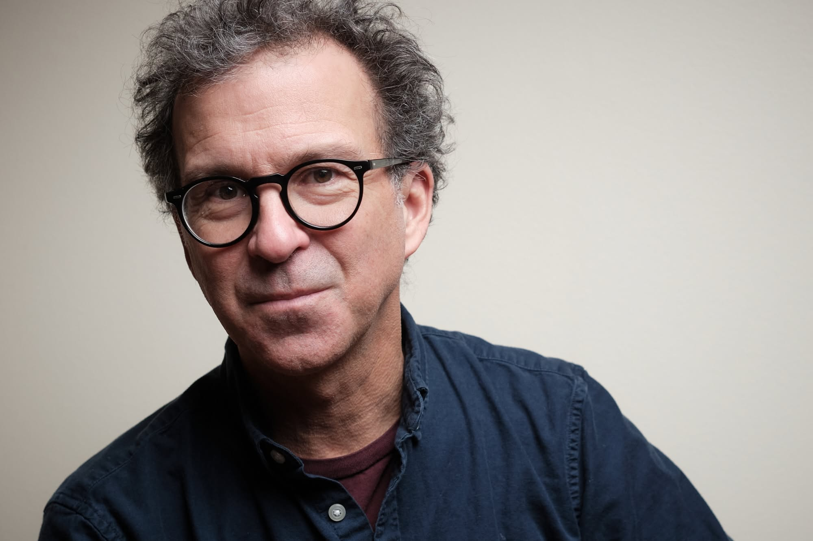

Portraits
Des portraits naturels qui révèlent la personnalité, la présence et l'univers de chaque personne. En studio, en milieu de travail ou dans un environnement significatif, chaque séance vise des images justes, fortes et intemporelles.
Documentaires
Des projets vidéographiques qui prennent le temps d'observer, d'écouter et de raconter. Des histoires réalisées sur le terrain, au plus près des personnes, des communautés et des réalités explorées.
Mouvements sociaux
Une documentation visuelle des mobilisations, des revendications et des luttes collectives. Ces images donnent un visage aux personnes qui occupent l'espace public pour défendre leurs droits, leurs valeurs et leur vision du monde.
Mariages
Une approche discrète et sensible pour raconter chaque mariage avec naturel. Des préparatifs aux célébrations, les images captent les émotions, les gestes spontanés et les moments marquants afin de créer un récit fidèle à l'atmosphère unique de la journée.

Dominic Morissette
Photographe et vidéaste, Dominic Morissette développe une pratique centrée sur l'humain, le territoire et les histoires qui façonnent notre quotidien. Son approche conjugue sensibilité documentaire, maîtrise technique et attention portée aux détails. À travers chaque mandat, il cherche à créer des images authentiques, évocatrices et profondément ancrées dans le réel.